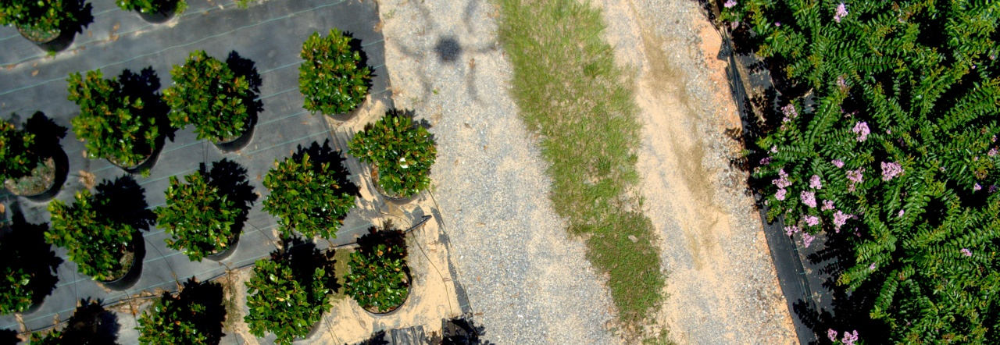

Compact model.
Local inference.
A fine-tuned YOLO11n detector, exported to ONNX and run directly on your device.
COMPUTER VISION, ROOTED IN THE FIELD
Turn an overhead nursery image into plant counts and measurable box coverage. Inspect the evidence. Keep the image on your device.

THE WORKSPACE
A NEW PERSPECTIVE STARTS HERE
Upload an overhead image or explore the sample.
Your plant boxes and counts will appear here.
BUILT TO BE INSPECTED
A research prototype for exploring plant detection in overhead nursery imagery, developed by Harshita Manjunatha.
A fine-tuned YOLO11n detector, exported to ONNX and run directly on your device.
Inspect automatic detections or view supplied annotations. Each result says where its boxes came from.
Training scripts, evaluation metrics, data-quality notes, and exportable results accompany the prototype.
Explore the repository ↗